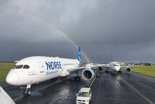
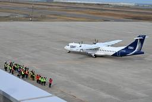

TRAICY（トライシー）
https://www.traicy.com/
TRAICY（トライシー）は、航空・LCC・鉄道・ホテル・ゲストハウス・バックパッカーズの最新情報を発信している、日本最大級のトラベルメディアです。
フィード
京成バス千葉イースト、東京駅〜東金・成東線「シーサイドライナー」を12月1日にダイヤ改正
TRAICY（トライシー）
京成バス千葉イーストは、高速バスの東京駅〜東金・成東線「シーサイドライナー」のダイヤを12月1日に改正する。 運行本数の最適化と出発時刻の調整、成東方面行きの所要時間の見直しを行うほか、平日・土休日ダイヤを廃止して全日ダ […]投稿 京成バス千葉イースト、東京駅〜東金・成東線「シーサイドライナー」を12月1日にダイヤ改正 は TRAICY（トライシー） に最初に表示されました。
9時間前
ANAクラウンプラザホテル神戸、「SHIN KOBE HOTEL」へリブランド 改装後には「マリオット・マーキス」に
TRAICY（トライシー）
ANAクラウンプラザホテル神戸は、「SHIN KOBE HOTEL（新神戸ホテル）」へ12月1日にリブランドする。 IHGホテルズ＆リゾーツを脱退し、同日からはマリオット・インターナショナルの会員プログラム「Marrio […]投稿 ANAクラウンプラザホテル神戸、「SHIN KOBE HOTEL」へリブランド 改装後には「マリオット・マーキス」に は TRAICY（トライシー） に最初に表示されました。
11時間前

ノースアトランティック航空、ノルウェーの運航子会社が破産申請
TRAICY（トライシー）
ノースアトランティック航空は、完全子会社のノルウェーの運航会社、ノースアトランティック・エアウェイズが破産を申請したと発表した。 11月25日に財務状況が危機的であると発表し、11月26日から全便を欠航している。航空券の […]投稿 ノースアトランティック航空、ノルウェーの運航子会社が破産申請 は TRAICY（トライシー） に最初に表示されました。
20時間前

JTB、純利益21億円 人件費やM＆A費用で大幅減益、2026年4月〜9月期
TRAICY（トライシー）
JTB（ジェイティービー）は、2027年3月期の中間決算を発表した。純利益は21億円（前年同期比68％減）となった。 売上高は5,613億円（同6％増）、営業利益は28億円（同45％減）、経常利益は45億円（同35％減） […]投稿 JTB、純利益21億円 人件費やM＆A費用で大幅減益、2026年4月〜9月期 は TRAICY（トライシー） に最初に表示されました。
20時間前

三菱UFJニコス、プラチナカード付帯の「プライオリティ・パス」サービス改定 無料利用は年10回までに 2
2
TRAICY（トライシー）
三菱UFJニコスは、各種プラチナカードに付帯する「プライオリティ・パス」のサービスを12月2日から改定する。 無料で利用できるサービスの回数の上限を10回に設定（現行では無制限）する。11回目以降は、1回あたり35米ドル […]投稿 三菱UFJニコス、プラチナカード付帯の「プライオリティ・パス」サービス改定 無料利用は年10回までに は TRAICY（トライシー） に最初に表示されました。
21時間前
ニュージーランド航空、成田〜クライストチャーチ線約11年ぶり再開 南島・北島の周遊も便利に
TRAICY（トライシー）
ニュージーランド航空は11月27日、東京/成田〜クライストチャーチ線の運航を再開した。2015年3月以来、約11年ぶりの再開となり、2027年5月8日まで季節運航する。 成田発・現地発ともに火・木・土曜の週3往復を運航す […]投稿 ニュージーランド航空、成田〜クライストチャーチ線約11年ぶり再開 南島・北島の周遊も便利に は TRAICY（トライシー） に最初に表示されました。
1日前

熊本県、「熊本ふっこう応援割」第2弾を設定 1月4日〜2月22日宿泊分
TRAICY（トライシー）
熊本県は、政府による旅行支援「九州ふっこう応援割」による「熊本ふっこう応援割」第2弾を、2027年1月4日から2月22日（チェックアウト分）までを対象に設定する。 割引率は60％で、割引限度額は宿泊単体商品と交通付宿泊旅 […]投稿 熊本県、「熊本ふっこう応援割」第2弾を設定 1月4日〜2月22日宿泊分 は TRAICY（トライシー） に最初に表示されました。
1日前
ノースアトランティック航空、リース会社から全機の契約解除通知を受領
TRAICY（トライシー）
ノース・アトランティック航空は、リース会社から全機材のリース契約の解除通知を受領したと発表した。 11月25日と26日に財務状況と戦略的見直しに関する発表を行っており、11月26日には資金調達が可能かどうかの明確化を待つ […]投稿 ノースアトランティック航空、リース会社から全機の契約解除通知を受領 は TRAICY（トライシー） に最初に表示されました。
1日前

スカイマーク、ANAなど5社と手荷物連帯運送 乗り継ぎ時に荷物の預け直し不要に
TRAICY（トライシー）
スカイマークは、航空5社と国内旅客手荷物の連帯運送契約を締結した。 対象となるのは全日本空輸（ANA）とAIRDO（エア・ドゥ）、スターフライヤー、ソラシドエア、アイベックスエアラインズの5社。 12月1日から、全路線を […]投稿 スカイマーク、ANAなど5社と手荷物連帯運送 乗り継ぎ時に荷物の預け直し不要に は TRAICY（トライシー） に最初に表示されました。
1日前
FDA、17号機の機体カラーを「BLACK RED」に コシノジュンコ氏がデザイン
TRAICY（トライシー）
フジドリームエアラインズ（FDA）は、17号機（エンブラエルE175型機、機体記号：JA17FJ）の機体カラーを決定した。 機体カラーは、「SUPER BLACK（スーパーブラック）」と「CRIMSON RED（クリムゾ […]投稿 FDA、17号機の機体カラーを「BLACK RED」に コシノジュンコ氏がデザイン は TRAICY（トライシー） に最初に表示されました。
1日前
コンラッド東京、フェスティブ・ランチビュッフェを開催 11月16日から
TRAICY（トライシー）
コンラッド東京は、「シェフズ・トリート・フェスティブ・ランチビュッフェ」を11月16日から12月25日までの平日と11月23日限定で開催する。 メインは、金目鯛やハマグリ、牡蠣といった魚介を使用したブイヤベース、フォアグ […]投稿 コンラッド東京、フェスティブ・ランチビュッフェを開催 11月16日から は TRAICY（トライシー） に最初に表示されました。
1日前

京王プラザホテル、クリスマスアフタヌーンティーを開催 12月1日から
TRAICY（トライシー）
京王プラザホテルは、「クリスマスアフタヌーンティー」を12月1日から31日まで開催する。 スイーツは、大ぶりサイズで仕立てた「いちごのショートケーキ」、ホワイトチョコレートと抹茶を合わせたガナッシュをモンブランのように絞 […]投稿 京王プラザホテル、クリスマスアフタヌーンティーを開催 12月1日から は TRAICY（トライシー） に最初に表示されました。
1日前
スターフライヤー、運航ダイヤ統制の最適化ツール「Operational Forecaster」を正式導入
TRAICY（トライシー）
スターフライヤーは、NABLA Mobilityが開発する運航ダイヤ統制最適化ツール「Operational Forecaster」の正式導入を決めた。 Operational Forecasterは、過去の運航データ、 […]投稿 スターフライヤー、運航ダイヤ統制の最適化ツール「Operational Forecaster」を正式導入 は TRAICY（トライシー） に最初に表示されました。
1日前
コートヤード・バイ・マリオット 新大阪ステーション、アップルパイを表現したバーガーを販売 12月1日から
TRAICY（トライシー）
コートヤード・バイ・マリオット 新大阪ステーションは、アップルパイとハンバーガーを掛け合わせた「FLAKY APPLE BURGER」を12月1日から2027年2月28日まで販売する。 シナモンとバターを塗った赤いバンズ […]投稿 コートヤード・バイ・マリオット 新大阪ステーション、アップルパイを表現したバーガーを販売 12月1日から は TRAICY（トライシー） に最初に表示されました。
1日前
近畿日本ツーリスト、「ブラックフライデーキャンペーン2026」開催 国内旅行で最大10,000円引きクーポン配布
TRAICY（トライシー）
近畿日本ツーリストは、「ブラックフライデーキャンペーン2026」を11月25日から12月4日まで実施している。 対象は、交通と宿泊を組み合わせる国内ダイナミックパッケージと国内宿泊プラン。国内ダイナミックパッケージは旅行 […]投稿 近畿日本ツーリスト、「ブラックフライデーキャンペーン2026」開催 国内旅行で最大10,000円引きクーポン配布 は TRAICY（トライシー） に最初に表示されました。
1日前
東京メトロ・都営地下鉄、Visaタッチ乗車で最大30％還元 11月26日から2027年1月11日まで 1
TRAICY（トライシー）
三井住友カードは、「東京メトロ・都営地下鉄 冬のクレカ乗車 Visaで還元キャンペーン」を11月26日から2027年1月11日まで実施している。 東京メトロ全線と都営地下鉄全線で、国内発行のVisaタッチ決済対応カードや […]投稿 東京メトロ・都営地下鉄、Visaタッチ乗車で最大30％還元 11月26日から2027年1月11日まで は TRAICY（トライシー） に最初に表示されました。
1日前

スーパーホテルPremier、朝食に「パワーサラダ」を順次導入
TRAICY（トライシー）
スーパーホテルは、スーパーホテルPremier店舗で朝食ビュッフェメニュー「パワーサラダ」を11月中旬から順次提供している。 サラダ野菜、鶏むね肉などのたんぱく質、フルーツ、トッピングなどを自由に組み合わせ、食物繊維やビ […]投稿 スーパーホテルPremier、朝食に「パワーサラダ」を順次導入 は TRAICY（トライシー） に最初に表示されました。
1日前
チューリッヒ空港、滑走路34の高速誘導路運用開始
TRAICY（トライシー）
チューリッヒ空港は、滑走路34で整備していた高速誘導路の運用を、11月25日から26日にかけての夜間から開始した。 高速誘導路2本のうち、2本の整備を終えた。機体の間隔が最適化されることにより、遅延の軽減や運航の安定性の […]投稿 チューリッヒ空港、滑走路34の高速誘導路運用開始 は TRAICY（トライシー） に最初に表示されました。
1日前

「THE KNOT YOKOHAMA」、12月1日リニューアルオープン
TRAICY（トライシー）
ワンファイブホテルズは、改装工事に伴い休館していた「THE KNOT YOKOHAMA」を12月1日にリニューアルオープンする。 客室は、港町・横浜を行き交う客船のキャビンをイメージした全145室を設ける。最上階には、コ […]投稿 「THE KNOT YOKOHAMA」、12月1日リニューアルオープン は TRAICY（トライシー） に最初に表示されました。
1日前
楽天トラベル、「九州ふっこう応援割」を11月27日販売再開 福岡・佐賀・長崎県対象
TRAICY（トライシー）
楽天グループは、旅行予約サイト「楽天トラベル」で、旅行支援「九州ふっこう応援割」の販売を、福岡県は11月27日午前10時から、佐賀県は同正午から、長崎県は同午後2時から再開する。 宿泊単体と航空券と宿泊がセットになった「 […]投稿 楽天トラベル、「九州ふっこう応援割」を11月27日販売再開 福岡・佐賀・長崎県対象 は TRAICY（トライシー） に最初に表示されました。
1日前
渋谷エクセルホテル東急、宿泊者専用ラウンジを11月30日オープン
TRAICY（トライシー）
渋谷エクセルホテル東急は、宿泊者専用ラウンジ「PREMIER LOUNGE PANORAMA」を11月30日午後2時にオープンする。 地上100メートルの最上階25階「SHIBUYA PANORAMA」内に全52席を設け […]投稿 渋谷エクセルホテル東急、宿泊者専用ラウンジを11月30日オープン は TRAICY（トライシー） に最初に表示されました。
1日前
東横INN東西線西葛西、大規模改修工事に伴い一時休館
TRAICY（トライシー）
東横INN東西線西葛西は、大規模改修工事のため2027年1月31日から一時休館する。 客室数は197室。アクセスは東京メトロ西葛西駅から徒歩約3分。東京ディズニーリゾートからの無料送迎バスも運行している。 休館期間は12 […]投稿 東横INN東西線西葛西、大規模改修工事に伴い一時休館 は TRAICY（トライシー） に最初に表示されました。
1日前
エアトリ、最大4万円引きの「ブラックフライデー2026」を開催 12月3日まで
TRAICY（トライシー）
エアトリは、「エアトリブラックフライデー2026」を11月24日から12月3日まで開催する。 国内航空券、国内航空券＋ホテル、国内ホテル、国内ツアー、新幹線、レンタカー、高速・夜行バスのほか、海外航空券、海外航空券＋ホテ […]投稿 エアトリ、最大4万円引きの「ブラックフライデー2026」を開催 12月3日まで は TRAICY（トライシー） に最初に表示されました。
1日前

エアアジア・フィリピンの乗員組合がストライキ 人員削減に反発
TRAICY（トライシー）
エアアジア・フィリピン操縦士組合（APPU）は11月26日、同社が年内に約90名の操縦士を削減する決定を受けてストライキを実施すると通告した。 組合によると、エアアジア・フィリピンは、在籍数の半数近くに及ぶ機長と副操縦士 […]投稿 エアアジア・フィリピンの乗員組合がストライキ 人員削減に反発 は TRAICY（トライシー） に最初に表示されました。
1日前

「メルキュールニセコリゾート」、11月20日開業 ニセコエリア初進出
TRAICY（トライシー）
アコーは、「メルキュールニセコリゾート」を11月20日に開業した。 建物は地上6階建て。客室は、簡易キッチン付き客室など4タイプ、全176室を設ける。空間デザインは、ニセコの自然や風土から着想を得た、落ち着きのあるデザイ […]投稿 「メルキュールニセコリゾート」、11月20日開業 ニセコエリア初進出 は TRAICY（トライシー） に最初に表示されました。
1日前
じゃらんnet、「じゃらんクーポンフェス」開催 クーポン追加配布開始
TRAICY（トライシー）
リクルートは、旅行予約サイト「じゃらんnet」で開催中の「じゃらんクーポンフェス」で、クーポンの追加配布を11月26日午前10時から開始した。 対象の宿泊施設で20,000円、5,000円、3,000円、2,000円、1 […]投稿 じゃらんnet、「じゃらんクーポンフェス」開催 クーポン追加配布開始 は TRAICY（トライシー） に最初に表示されました。
2日前

トキエア、「BLACK FRIDAY SALE」開催 片道6,900円から
TRAICY（トライシー）
トキエアは、「BLACK FRIDAY SALE」を11月25日正午から30日まで開催する。 全路線が対象で、対象便限定となる。片道運賃は平日が6,900円から、土・日・祝日が9,900円から。旅客施設使用料とシステム利 […]投稿 トキエア、「BLACK FRIDAY SALE」開催 片道6,900円から は TRAICY（トライシー） に最初に表示されました。
2日前
着陸復航中のJAL機、地表に接近 重大インシデント認定
TRAICY（トライシー）
日本航空（JAL）は、11月14日の東京/羽田発宮崎行きJL687便（ボーイング737-800型機、機体記号：JA322J）が、着陸復航中に地表に接近したことを明らかにした。国土交通省航空局は、重大インシデントに認定した […]投稿 着陸復航中のJAL機、地表に接近 重大インシデント認定 は TRAICY（トライシー） に最初に表示されました。
2日前
チェジュ航空、48時間限定セール開催 日韓線が片道総額14,530円から
TRAICY（トライシー）
チェジュ航空は、日韓線を対象とした「48時間限定セール」を11月25日から27日午前9時59分まで実施している。 受託手荷物15キロが含まれた、STANDARD運賃の片道最低運賃は以下の通り。燃油サーチャージや空港利用料 […]投稿 チェジュ航空、48時間限定セール開催 日韓線が片道総額14,530円から は TRAICY（トライシー） に最初に表示されました。
2日前

エティハド航空、ブラックフライデーセール開催 欧州往復12万円台から
TRAICY（トライシー）
エティハド航空は、ブラックフライデーセールを11月22日から29日まで開催している。 エコノミークラス・ビジネスクラスの片道・往復運賃が最大20％オフとなる、往復最低運賃は次の通り。燃油サーチャージ、諸税込み。左からエコ […]投稿 エティハド航空、ブラックフライデーセール開催 欧州往復12万円台から は TRAICY（トライシー） に最初に表示されました。
2日前